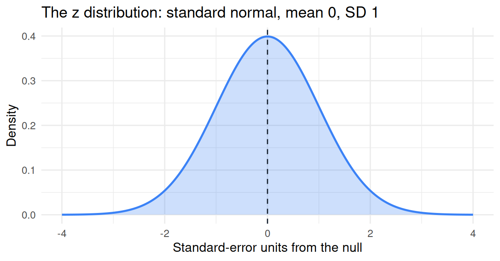
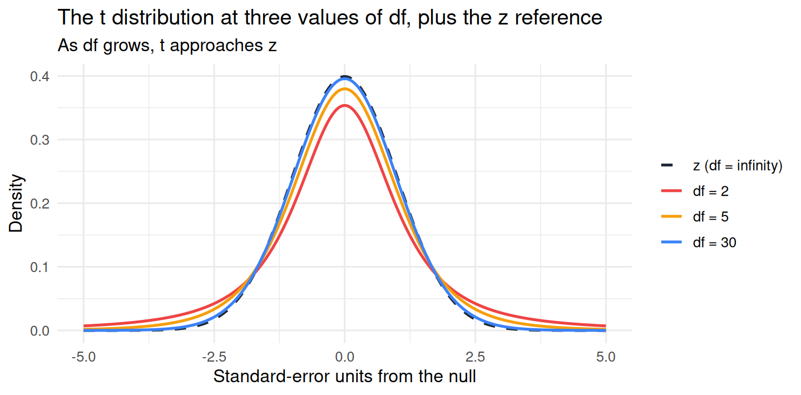
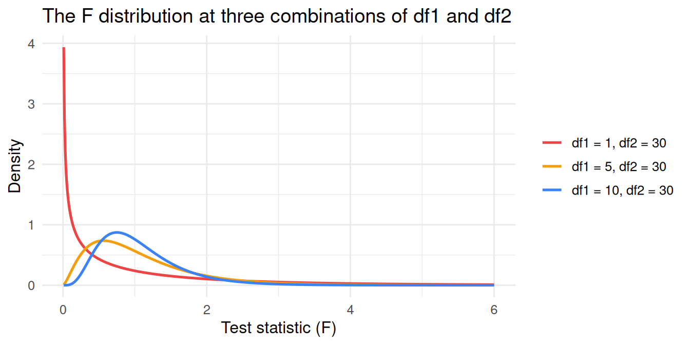

x_bar <- 95
mu0 <- 100
s <- 8
n <- 25
SE <- s / sqrt(n)
SE[1] 1.6t_stat <- (x_bar - mu0) / SE
t_stat[1] -3.125Chapter 21 introduced the sampling distribution and the standard error. Chapter 22 introduced the p-value and the two philosophies of testing (Fisher’s continuous evidence and Neyman-Pearson’s calibrated decision procedure). In both chapters we treated the sampling distribution as a known object whose shape we could appeal to: roughly normal for the mean, in particular.
This chapter fills in what we glossed over: how does R actually turn your sample data into a p-value? What is the universal mathematical machinery that lets the same software handle a mean, a regression slope, a difference between two groups, an ANOVA, and a chi-squared test? The answer involves three new ideas that work together:
By the end of the chapter you will be able to read the “t value,” “Pr(>|t|),” and the F-statistic at the bottom of summary(lm(...)). The mystery of the inferential machinery will turn out to be a smaller mystery than it first looks.
We borrow a small story (used in many statistics textbooks, including Lakens 2022) to make the ideas concrete.
Imagine a bakery called Hannah’s that advertises 100-gram brownies. You are suspicious that Hannah’s brownies are systematically lighter than advertised. To check, you buy 25 brownies over a few weeks, weigh each one at home, and find an average of 95 grams across your 25 brownies. You also compute the sample standard deviation: 8 grams.
The question is essentially the same one that motivates every test in this book. Is 95 grams suspicious given that Hannah claims 100? Or is 95 a result we could easily get by chance because of sampling variability, even if Hannah’s true mean is really 100?
To answer this, we need three things:
For the rest of the chapter we use this story to build up each piece of machinery in turn.
Our sample mean is 95 g; the null value is 100 g; the difference is 5 g. That number alone is hard to interpret. Is 5 grams a lot or a little? It depends on how much sample means typically wobble across samples like ours, which is captured by the standard error.
The trick is to express the distance from the null in units of the standard error. That converts an unfamiliar 5-gram difference into a generic “this far from the null in standard-error units” measure that we can compare against a universal reference curve.
This standardized distance is the test statistic. For a one-sample mean, it takes the form:
\[ t = \frac{\bar{x} - \mu_0}{\text{SE}_{\bar{x}}} \]
with the standard error estimated as \(\text{SE}_{\bar{x}} = s / \sqrt{n}\) where \(s\) is the sample SD. For Hannah’s brownies:
x_bar <- 95
mu0 <- 100
s <- 8
n <- 25
SE <- s / sqrt(n)
SE[1] 1.6t_stat <- (x_bar - mu0) / SE
t_stat[1] -3.125So our sample mean is \(-3.125\) standard errors away from the null value. The minus sign tells us we are on the “less than 100” side; the magnitude tells us we are three-and-a-bit SEs out from the null.
That is the key conceptual move. The test statistic is the standardized distance from the null. Once we have it, we can compare it to a universal reference curve that tells us how often a value of that size would occur by chance under H₀.
A few practical points about this move:
We unpack these reference curves next.
The reference distribution is the known shape that the test statistic takes under H₀ given a particular set of assumptions. Three families appear most often.
The z distribution is the standard normal: mean 0, standard deviation 1. It is the reference curve when the test statistic is a sample mean (or anything that can be standardized into one) and the population SD is known exactly. In practice, the population SD is almost never known, so the pure z test is rarely used for one-sample problems. But the z distribution is what every other reference curve in this section converges to as sample sizes grow, so it is the natural starting point.

The z distribution is symmetric and bell-shaped, with about 95% of its mass between \(-1.96\) and \(1.96\). A z-statistic outside that range corresponds to a two-tailed p-value smaller than .05. The same 95% / .05 reference is what underlies the rule of thumb “results within roughly \(\pm 2\) standard errors are unsurprising under H₀.”
When we have to estimate the population SD from our sample (which is the realistic case), the test statistic does not quite follow a z distribution. Estimating the SD adds extra uncertainty: with small samples, the sample SD can be far from the true SD, and an extreme-looking test statistic might come from a sample whose SD estimate happened to be unusually small. The t distribution accounts for this by having heavier tails than the z. With a small sample, the t distribution says “be more cautious”: an apparently large test statistic might be less surprising than it would be under z.
The t distribution has a parameter called degrees of freedom (df), which controls its shape. With small df the tails are fat; with large df the tails are thinner, and the t distribution converges to z. The intuition is that a larger sample gives a more reliable SD estimate, so the correction matters less.

Notice how the three t curves (red, orange, blue) become indistinguishable from the dashed z line as df increases. At df = 30 the difference is already small; at df = 100 it would be invisible at this scale.
For our Hannah example, the t statistic was \(-3.125\) with df = \(n - 1 = 24\). We can compute the corresponding two-tailed p-value directly:
2 * pt(-3.125, df = 24)[1] 0.004602638About 0.0046, or roughly 0.5%. Under H₀ (Hannah’s claim of 100 g), results as extreme as ours (95 g or more extreme on either side) would occur less than half a percent of the time. The data are very surprising under H₀.
When we want to compare two variance estimates against each other (as in ANOVA or in the overall test of a regression model), the test statistic is no longer a standardized mean; it is a ratio of variances. Under H₀, the ratio of two variance estimates follows the F distribution. The F has two degrees-of-freedom parameters, one for the numerator and one for the denominator.

The F is right-skewed and runs from 0 to infinity (a ratio of squared things cannot be negative). The exact shape depends on the two df values. F appears in two main places in this book: the overall F-statistic at the bottom of summary(lm(...)) (testing whether the model as a whole explains anything), and ANOVA (Chapter to come).
The big takeaway about z, t, and F is that they are three different rulers for three different kinds of standardized statistics, but the logic is the same: we compute a test statistic, look up its position on the universal reference curve, and read off a tail area (the p-value). The math is universal because mathematicians once computed each reference curve, and now we just look up the answer.
| Situation | Test statistic | Reference distribution |
|---|---|---|
| One mean, population SD known | \((\bar{x} - \mu_0) / (\sigma / \sqrt{n})\) | z |
| One mean, population SD estimated | \((\bar{x} - \mu_0) / (s / \sqrt{n})\) | t with df = n − 1 |
| Two means, separate samples | difference of means / SE of the difference | t |
| Slope in a simple regression | slope / SE of slope | t |
| Overall regression model | mean-square ratio | F |
| Several group means (ANOVA) | mean-square ratio | F |
These are not separate tests; they are different specific cases of the same single logic.
The shape of the t (and F) distribution depends on degrees of freedom. We should be explicit about what df actually means, because most introductions present it as a magic formula and most students leave with no intuition for what it is.
The right way to think about it: degrees of freedom are an information budget. You start with n independent pieces of information (your n observations). Every time you estimate a parameter from the data, you spend one piece of that information. The df is what is left.
A small example. With Hannah’s 25 brownies, we started with 25 pieces of information. To compute the sample standard deviation, we first needed to compute the sample mean. That one calculation “spent” one piece of the information: once you know the mean, you only need 24 of the 25 deviations from the mean to determine the 25th (the deviations have to sum to zero). So the sample SD is computed using df = 25 - 1 = 24 effective pieces of information. That is why df for a one-sample t-test is n - 1.
The pattern generalizes. Each parameter estimated from the data costs one piece of information.
| Test or model | df expended | df left |
|---|---|---|
| One-sample t-test | 1 (the mean) | n − 1 |
| Two-sample t-test | 2 (two group means) | n − 2 |
| Simple regression slope test | 2 (intercept and slope) | n − 2 |
| Multiple regression with k predictors | k + 1 (intercept + k slopes) | n − k − 1 |
This explains why df matters mechanically: a smaller df makes the t distribution heavier-tailed, which means a given test statistic produces a larger p-value. When you have few observations and have estimated several parameters, your estimates of the SE are unreliable, and the reference distribution should be more cautious. Df captures this exactly.
A concrete consequence: the same observed test statistic of, say, t = 2.5 corresponds to different p-values at different df.
2 * pt(-2.5, df = 5) # df = 5[1] 0.05449012 * pt(-2.5, df = 30) # df = 30[1] 0.018115652 * pt(-2.5, df = 200) # df = 200[1] 0.01322317With df = 5 the p-value is about 0.05; with df = 30 it is about 0.018; with df = 200 it is about 0.013. The same test statistic, but the conclusion depends on how reliable your SD estimate was. Larger df, more reliable estimate, smaller p-value.
You will rarely compute a test statistic by hand. R has built-in functions for every standard test:
t.test() for one- and two-sample t-tests.cor.test() for correlations.chisq.test() for chi-squared tests.aov() for ANOVA.summary(lm(...)) reports t-statistics and an overall F.When R reports a p-value, it has done the following in order:
For Hannah’s brownies, the t-test would look like this in R:
# Simulate 25 brownies with mean 95, SD 8 to recreate the example
set.seed(7)
brownies <- rnorm(25, mean = 95, sd = 8)
t.test(brownies, mu = 100)
One Sample t-test
data: brownies
t = -0.67498, df = 24, p-value = 0.5061
alternative hypothesis: true mean is not equal to 100
95 percent confidence interval:
94.77481 102.64977
sample estimates:
mean of x
98.71229 The output reports the t-statistic, the df, and the two-tailed p-value, exactly as we computed them by hand. The 95% confidence interval is a different (related) inferential output we will not develop here.
The most important thing this whole chapter does for you, in practice, is the following. Look back at the summary(lm(...)) output from Chapter 16:
Coefficients:
Estimate Std. Error t value Pr(>|t|)
(Intercept) 4.1962 0.2827 14.843 < 2e-16
hours_weekly 0.0816 0.0271 3.016 0.00313
Residual standard error: 1.556 on 118 degrees of freedom
F-statistic: 9.1 on 1 and 118 DF, p-value: 0.003133You now know what every column means.
hours_weekly: 0.0816 / 0.0271 ≈ 3.016.Everything you politely ignored in Chapter 16 is now interpretable.
The reference distributions (z, t, F) deliver correct p-values only when the assumptions of the test are reasonable. We have already seen most of these assumptions in Chapter 19, but they show up again here because they are what makes the inferential machinery work.
For a one-sample t-test, the assumptions are essentially:
For a regression, the LINE assumptions from Chapter 19 (Linearity, Independence, Normality of residuals, Equal variance) play the same role.
When assumptions are violated, the reference distribution is no longer guaranteed to match the actual sampling distribution of the test statistic. R will still print a p-value; the p-value just may not mean what we want it to mean. Lakens (2022, Chapter 1) emphasizes this point repeatedly: a p-value is part of a calibrated procedure, and the calibration requires the assumptions to hold.
You can now read every column of standard regression output, t-test output, and ANOVA output. You can also explain what R is computing when it returns a p-value, and you can answer the question “what changes when df changes.”
Chapter 24 turns from the computation of p-values to the decision-theoretic structure that surrounds them. What happens when the procedure is wrong? What is the trade-off between Type I and Type II errors? What does it mean to “have 80% power,” and why is that claim meaningless without an anchor like SESOI (the Smallest Effect Size of Interest)?
Chapter 25 then returns to the philosophical issues raised at the end of Chapter 22: the distinction between exploratory and confirmatory work, the multiple-testing problem, the practical discipline of pre-registration, and the famous Ioannidis observation that under realistic conditions a large fraction of published “significant” findings may be false.
1. What is a “test statistic”?
2. In a one-sample t-test of the mean, what is the denominator of the test statistic?
3. What is “degrees of freedom” (df)?
4. When does each of the z, t, and F reference distributions apply?
5. How does the t distribution differ from the z distribution, and why?
6. In summary(lm(...)) output, what do the “Std. Error,” “t value,” and “Pr(>|t|)” columns represent for a coefficient?
7. Why does the same observed |t| = 2.5 give a smaller p-value at df = 200 than at df = 5?
8. In what sense is the F distribution a “ratio” distribution?
9. Why do the assumptions of a test matter for the validity of its p-value?
10. What is the “information budget” view of degrees of freedom?
Lakens, D. (2022). Improving your statistical inferences. Chapter 1, “Using p-values to test a hypothesis.” https://lakens.github.io/statistical_inferences/01-pvalue.html
Navarro, D. J. (2018). Learning statistics with R: A tutorial for psychology students and other beginners (Version 0.6), Chapter 13 (“Comparing two means”). https://learningstatisticswithr.com